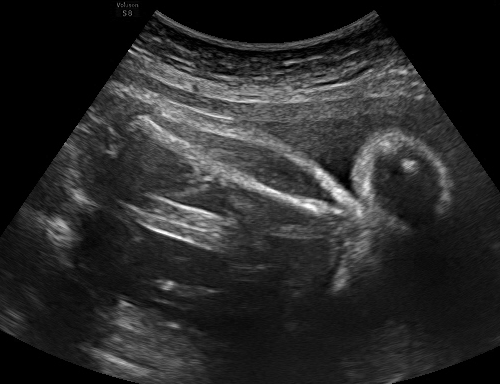
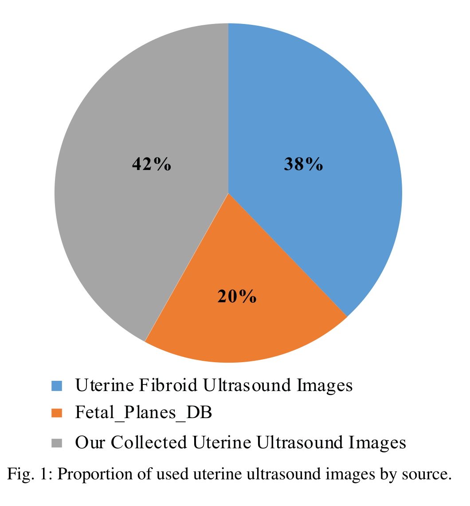
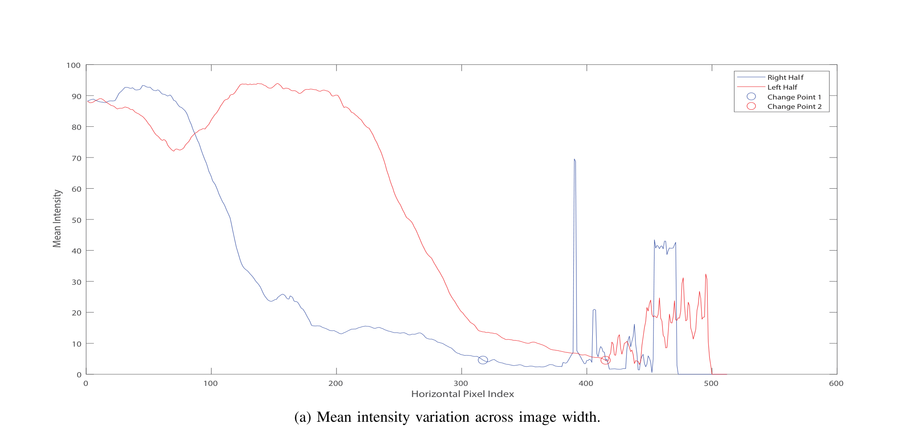
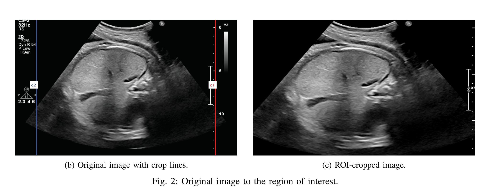
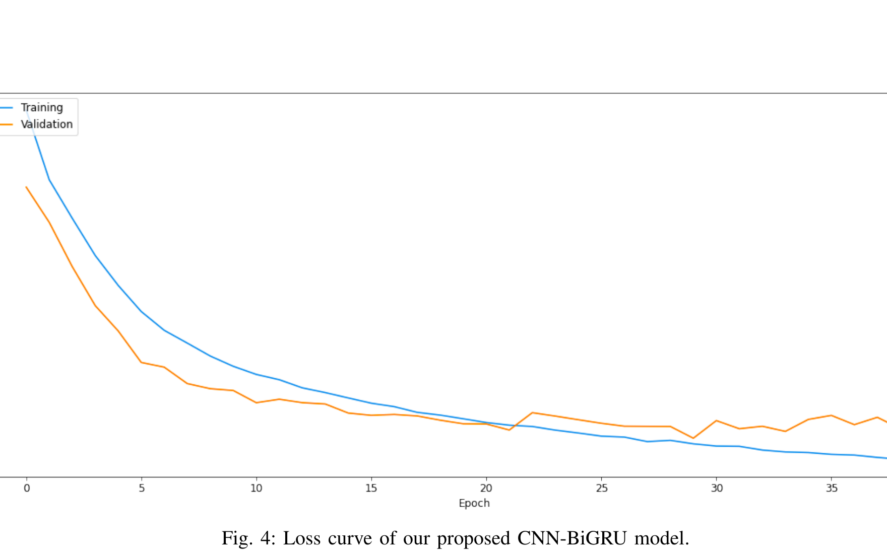
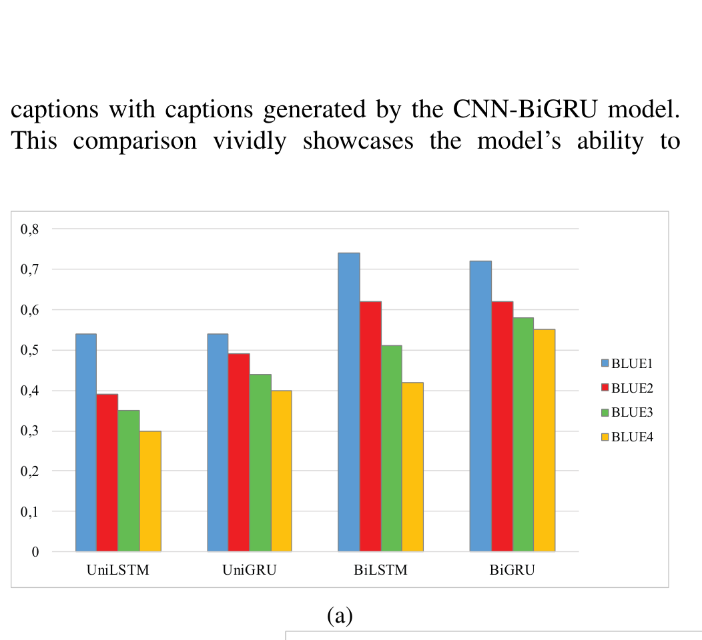
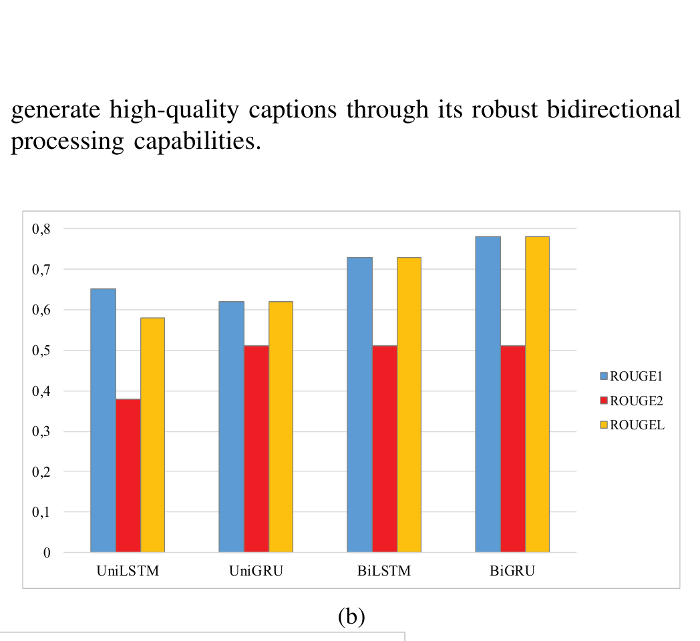
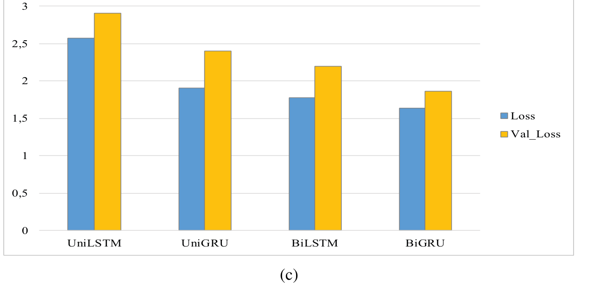

基于深度学习的子宫超声图像描述生成
本质上，这是一个 "看图说话"（Image Captioning）任务，应用到了妇产科超声领域。

| 阶段 | 文本输入 | 说明 |
|---|---|---|
| 训练时 | 专家标注的完整 caption<START> a white line ... <END> |
Teacher Forcing — 给模型"标准答案"，让它学习"看到此图+这些前文 → 下一个词是什么" |
| 推理时 | 初始只有 <START>→ 模型自己逐词生成、追加 |
自回归：预测第1个词 → 追加到序列 → 预测第2个词 → ... → 直到输出 <END> 或达到 max_len=54 |
| 产出 | 详情 |
|---|---|
| 1. 专用数据集 | 505 张子宫超声图像 + 专家撰写的文本标注，覆盖妇产科多种场景（仅用于训练） |
| 2. CNN-BiGRU 模型 | 自动为新超声图像生成描述文本，辅助医生快速理解图像内容。BLEU-4 = 0.55，ROUGE-L = 0.78 |
| 方法 | 核心思路 | 局限 |
|---|---|---|
| Coarse-to-fine Ensemble [10] | 粗分类检测器官 → 细分类编码 → 语言模型生成描述；基于 VGG16 迁移学习 | 多阶段流水线，复杂度高 |
| CNN + RNN (VGGNet16) [12] | CNN 提取图像特征 + RNN 编码文本特征，针对胎儿超声视频 | 仅面向胎儿超声 |
| Object Detection + LSTM [13] | 区域检测定位焦点区域，LSTM 生成描述 | 参数量仍较大 |
| Semantic Fusion Network [14] | 融合视觉与病理信息生成诊断报告 | 准确率提升仅 1.2% |
| Adaptive Multimodal Attention [15] | 词嵌入作为语义特征 + Sentinel 门控注意力 | 复杂度较高 |
| Weakly-supervised (弱监督) [16] | 利用大规模分类数据集生成伪标签，扩增训练集 | 依赖分类数据集质量 |
| Transformer-based (淋巴瘤) [17] | 深度稳定学习 + 记忆模块 + 非线性去相关 | 仅面向淋巴瘤超声 |

| 来源 | 数量 | 说明 |
|---|---|---|
| Sonoscape SS1-8000（自采集） | 214 张 (42%) | 1024×768 px，JPG 格式；来自合作妇产科诊所 |
| Mendeley 子宫肌瘤数据库 [19] | 191 张 (38%) | 从近 1500 张中筛选，排除重复/低质量 |
| Zenodo Fetal Planes DB [20] | 100 张 (20%) | 450 张中选取，覆盖腹部/脑/股骨/胸腔四个标准切面 |


将清洗后的文本转换为神经网络可处理的数值序列：
(None, 54) — 统一长度的整数序列，可直接输入 Embedding 层
使用两个 ImageNet 预训练 CNN 并行提取图像特征向量：
| 配置项 | 值 |
|---|---|
| 训练集 / 验证集 | 85% / 15% |
| 优化器 | Adam |
| Batch Size | 16 |
| Early Stopping Patience | 10 epochs |
| 实际训练 Epoch | 39 (early stop at epoch 29 best) |

均使用 DenseNet201 + InceptionV3 特征提取，仅替换序列建模层：


